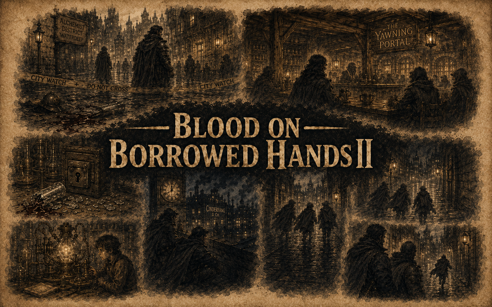

Click anywhere to dismiss
The Watchman Approaches
DC 12 Stealth — or invoke Watch authority
Cinderfang Warehouse
Dock Ward, Waterdeep — The Long Watch
The Watch Begins
—
Waiting to begin
10th Bell — Nightfall
6th Bell — Dawn
🔔
The Bell Tolls
— Paused —
Awaiting command
Open DM Screen to control